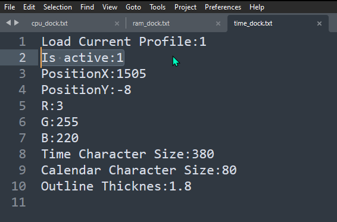
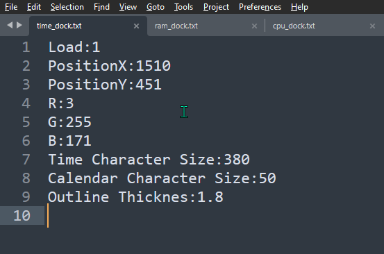
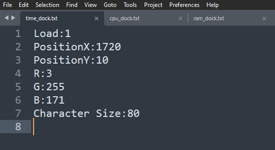
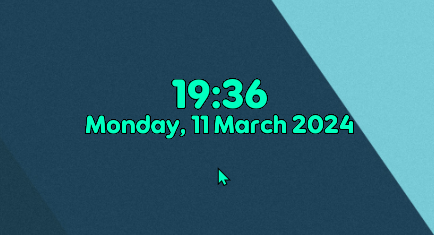
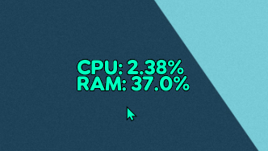
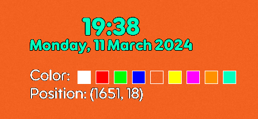

MyWidget Version Alpha 2.1_1
7/4/24
Bug Fixes:
MyWidget Version Alpha 2.1
1/4/24
Features:

Bug Fixes:
MyWidget Version Alpha 2.0_1
28/3/24
Bug Fixes:
Bugs:
MyWidget Version Alpha 2.0
20/3/24
Features:

Bug Fixes:
Bugs:
MyWidget Version Alpha 1.1
15/3/24
Features:

Bugs:
MyWidget Version Alpha 1.0
11/3/24
Features:



Bugs: